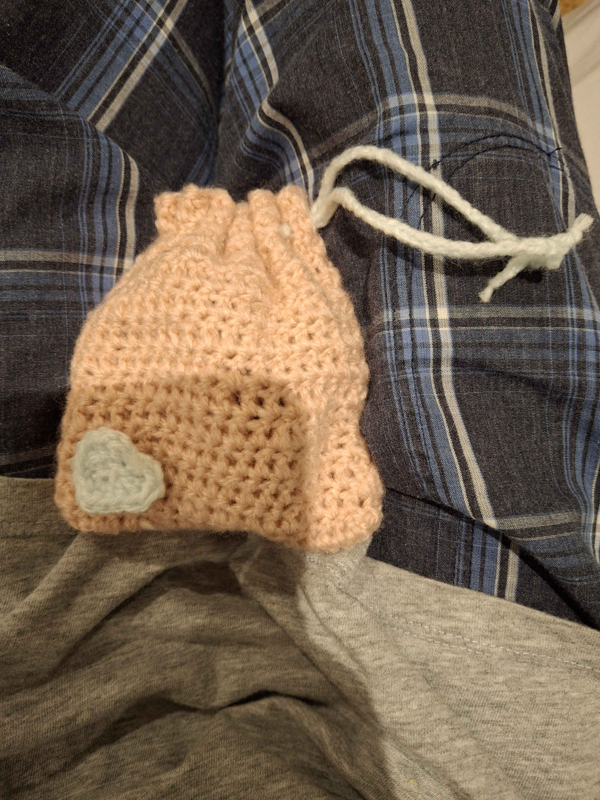
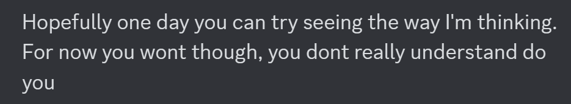
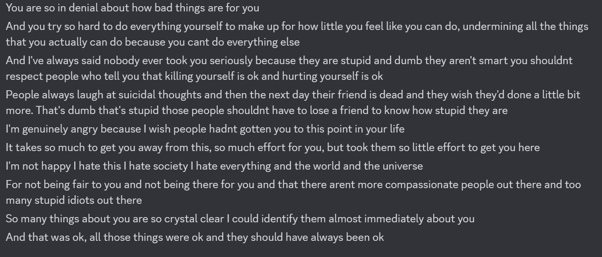

・A large splurge of events, including getting therapy referral (booking soon), being sick of neglecting myself, finally pushing for the things I want with my own agency. Finally feeling validated when I got therapy, inviting my friends out instead of thinking they'd invite me if they liked me, growing confidence.
・I've grown a lot but I think that's just because there's so much room to grow. I still have much more to go. Hoping therapy helps.
If you're reading this, hi! This is a personal website where I'm going to be posting just, stuff. Projects, coding, life things, stuff like that. I'm currently trying to prove to myself that I can do things and that I'm not a silly worthless dummy so I'm going to catalogue all my successes here so I can look back on them and go "yeah, see? A dead stick pretending to be a person couldn't achieve this! Remember, you're a person". I'm hoping one day I'll stop needing this page as a reminder and can just, know in my heart I'm good, but this is the first of many steps so here goes nothing hehe
Todo list
My score for today: 0
Art stuff!

A failed pouch turned lipbalm coozie. It looks like a sleeping bag, I wanna crawl in :o

Crochet Pouch 1. This one took some trial and error but I'm really proud of how it turned out! Stuffed with 50+ crochet hearts <3

Trying out if I like a taller slimmer pouch. I think I like it more yeah. I'm putting a lot of my important things in here~
Life stuff summaries (Stars denote importance ★☆)
First post - 7 Oct 2024 ★★★☆☆
Feelings and shifts - 7 Oct 2024 ★★★☆☆
・Finally getting therapy after being shut down for so long felt great, I feel human and validated because my feelings are finally being validated by my family.
・Remembering how it feels to just pick something up, do it, and do it well. Crochet's been fun. I gave it up to stop hurting when I lose things I love like piano, but I'm done giving up on what I want.
・Acknowledging embarassing things (I actually am a praise goblin), realising that becoming able to accept praise starts with me, so go me, imma praise myself.
・Remembering how it feels to just pick something up, do it, and do it well. Crochet's been fun. I gave it up to stop hurting when I lose things I love like piano, but I'm done giving up on what I want.
・Acknowledging embarassing things (I actually am a praise goblin), realising that becoming able to accept praise starts with me, so go me, imma praise myself.
Reflection... - 8 Oct 2024 ★★★★☆
・Chose therapist, in the morning calling and booking with my mum.
・Holy shit. Read back on DMs with Jen, realising just how hurt I really am and how little I saw it. Reading my own responses to everything Jen said. Realising just how right Jen was, and how blind I was, and how much it must have hurt Jen for me to say it's all fine. It's not fine. I need to apologise to Jen I hurt her so bad, but I have to apologise to myself first, because I hurt myself really, really bad.
・I don't even know if I see the full picture, I'm still growing, and have a lot more growing to do. But even just this amount opened my eyes this much, I'm scared just how much more I'm going to rediscover about myself, how hurt I really am. I'm scared, but oh well, I can do it.
・Holy shit. Read back on DMs with Jen, realising just how hurt I really am and how little I saw it. Reading my own responses to everything Jen said. Realising just how right Jen was, and how blind I was, and how much it must have hurt Jen for me to say it's all fine. It's not fine. I need to apologise to Jen I hurt her so bad, but I have to apologise to myself first, because I hurt myself really, really bad.
・I don't even know if I see the full picture, I'm still growing, and have a lot more growing to do. But even just this amount opened my eyes this much, I'm scared just how much more I'm going to rediscover about myself, how hurt I really am. I'm scared, but oh well, I can do it.
First day seeing Jen - 9 Oct 2024 ★★★★★
・Good: Let Jen know I'm getting therapy, she apparently responded positively. I'm glad.
・Excruciatingly painful: I was prepared for Jen to be distant, but not to be completely cold shoulder 0 contact like I'm a serial killer to be avoided levels of distant. That hurt so bad. I'm going crazy, this hurts so much, I'm going to die from exhaustion at this rate I'm barely sleeping, no matter how hard I try to not think about her this silence and unease is going to tear me in half.
・Fatal mistake that will kill me if I don't fix it: Self sacrificing everything I ever wanted for people I care about in an unhealthy way making me horribily miserable. Seeing Jen so sad and hurt today, knowing Ann could feel left out without Yunqi, I pretended to go home early and sent Yunqi to them. They already have plenty of company, they were fine. I wasn't. I was hurting like mad today and I gave away the only company I had for their happiness. I felt awful and left out and alone. I did this all on instinct. I hate that. This has happened before. The difference now, I'm more ready now than ever before to crush this instinct. Come on bitch, I'm killing you and ridding you from my life, one of the instincts that keeps me in a loop of unhappiness. I will learn to form healthy relationships with care that doesn't involve a poor me giving my last dollar to everyone richer than me to see them marginally happier at my detriment. No more.
・Excruciatingly painful: I was prepared for Jen to be distant, but not to be completely cold shoulder 0 contact like I'm a serial killer to be avoided levels of distant. That hurt so bad. I'm going crazy, this hurts so much, I'm going to die from exhaustion at this rate I'm barely sleeping, no matter how hard I try to not think about her this silence and unease is going to tear me in half.
・Fatal mistake that will kill me if I don't fix it: Self sacrificing everything I ever wanted for people I care about in an unhealthy way making me horribily miserable. Seeing Jen so sad and hurt today, knowing Ann could feel left out without Yunqi, I pretended to go home early and sent Yunqi to them. They already have plenty of company, they were fine. I wasn't. I was hurting like mad today and I gave away the only company I had for their happiness. I felt awful and left out and alone. I did this all on instinct. I hate that. This has happened before. The difference now, I'm more ready now than ever before to crush this instinct. Come on bitch, I'm killing you and ridding you from my life, one of the instincts that keeps me in a loop of unhappiness. I will learn to form healthy relationships with care that doesn't involve a poor me giving my last dollar to everyone richer than me to see them marginally happier at my detriment. No more.
Life stuff and whatnot (Stars denote importance ★☆)
First post - 7 Oct 2024 ★★★☆☆
Normally I'd feel really weird putting out like, this much personal stuff out there, but I guess like, what the hell yunno? Anyways if someone's going to dislike me or think I'm weird for the things I've been going through then I think that says more about them than it says about me. So yeah, I'm going to say the things on my mind here. (Edit: I added passwords to this so only the people closest to me can see, just in case)
It's therapy time babyyy! I think some people's life goals are to, well actually I don't know LOL. But whatever it is, it's probably not therapy. I was always scared of this because of familial reasons, but in hindsight I realise I gave my fears and anxiety more power than they should have. I don't blame myself for it, I know that in the past a lot happened and I tried a lot and got shut down a lot and so I don't fault myself for becoming so apprehensive of reaching out for the things I wanted in life, but I can't keep living like this, neglecting myself.
This makes me really really pissed, but like, I always knew this in my head, right? That I'm a person and deserve to push for the things that I want, that I deserve to be happy. But in my heart I didn't know this, I never felt like a person. What's worse is no one could reach me, I had to make this push myself. If it wasn't me doing it with my own hands, I don't think I could have accepted the outcome, because I had to prove to myself that I could do something with my own agency in this world. Now that I've finally convinced my family that I need a psychologist, okay this is going to sound weird, but for the first time I feel like a person. I don't know why exactly, I think it's because something I wanted and pushed for so long but got pushed off on for so long, was finally mine because of my own actions. Of course, others were pushing for this for me, but I was always scared of failing again. I did a lot of prep work, like mending my relationship with my parents first before asking, but in hindsight if I just pushed directly for therapy, things would have been much easier, but alas I was a massive coward, and still am. But it's getting better hehe~
I've already gone to the doctor and spoke about referrals and the financial plan to get things cheaper, what a relief. Booking tomorrow, hope the wait times aren't bad, the sooner the better. Oh, something that happened that was really weird. About a week ago I swore I'd stop self harming because in my head I knew it was self sabotage if I want to start feeling ok about myself, yk? Loving myself, treating myself gently and whatnot. I did succeed with this, even in times I really really really felt I needed it to feel ok, but I didn't. But then recently, I looked in my trash and saw the really bloody tissues from times in the past, and for the first time I thought to myself "Oh god... what the fuck have I done to myself??" and felt genuinely terrified????? I'm not used to this. It's like, normally I just felt right, like everything was ok, that I was hurting a sub-human monster that needed to be put in its place and be hurt. But like, this time, I thought "Oh god I hurt a person, I'm cutting a human, I'm a person". That was a really really scary moment. I don't think I can hurt myself anymore after that moment...
I say that but it hasn't been long since I felt that, so I don't want to jinx anything. I'm going to wait until it's been long enough that I can say that yeah, I've stopped. I guess that's why I'm even making this in the first place, so I have an easy place to come back and look on how far I've come, so I never feel like I'm not getting better. I know I'm getting better now that I'm focusing on myself, I know I want to get better. Just you wait life, I'm going to get back at you for this (with love <3)
What else what else, so... I've gone out a lot with friends. I always wanted to be invited in the past, because I felt like if people liked me they'd invite me out, if they didn't invite me it's because they don't like me. Fuck that, I deserve to ask for people's time if I wanna go out with people I'll ask for it god damnit, and I have been. And it's been, GREAT! And, I feel like, yeah, people don't hate me?? I even spoke with some strangers. Spoke to some guy who lives in singapore, talked about life stuff for an hour with them (I was with a friend too), it was great. I went to a CSESoc event. I was looking out for events myself and asked some friends to go with me, and there I met with some highschool people from the grade above and below and grabbed their discord contacts! Look at me go, me in first year would have never done that before.
I feel so stupid actually. I finally took the dive and all of a sudden life looks so good, even if I'm really scared. I feel so stupid because, I was 1 more push away. I know in the past, this would've been really far away. But I gave up trying because it hurt so much each time I did and got shut down. I gave my fears too much power, and I was a coward. I put up walls to protect myself from ever hoping I could be happy, but these walls just hurt everyone around me. Actually, I'll save my feelings for a seperate post. This can be about stuff I've done. I also picked up crochet! As shown by the crochet posts up top. I'm actually so proud of myself there, in only a few days I'm making super adorable pouches??? I have feelings on this too but they can wait for another post. OH I'VE BEEN READING TOO THAT'S BEEN FUN! I went to Chatswood library a couple days ago and found a wellness book for women. To all the girlies out there sorry but your wellness books are great and gender is a social construct so I'M STEALING YOUR BOOKS! Read through it, got called out IMMEDIATELY and just, yeah. It's actually been, quite eye opening some of what was in there, like learning to respond to my emotions instead of reacting to them, learning to rewrite my subconscious by interrupting my habits and taking a moment to think about why I feel that way, realising it's not my fault that I act subconsciously so awful because it's a behaviour I developed as a defence mechanism from hurt but that now I have the power to change it so that is my responsibility going forward, stuff like that.
It's weird in that I feel so much better about who I am as a person already, but I'm not going to claim that yet. It's been only about a week, I need more time. Time to feel comfortable and confident in my progress, that it's not just a spike of "I did something good for myself" which then quickly dips and leaves me with the same empty feeling as before. Again, it's why I'm writing up this blog and going to therapy. To know I'm long term ok. I'm going to worry about myself first in foremost. And also, one last thing is that I remembered what I told to Jen before we started dating. That I thought I would never date anyone because I hated myself and I would feel bad for anyone who got in a relationship with me and had to deal with someone so self loathing as me. That's changed. Not the loving myself enough part, that's a work in progress. But that I think I'll never date anyone part. I think in this arc of self worth (I learnt today from some reading that 'self worth' != 'self esteem') I'm learning to accept not in my head, but in my heart, that I can be loved. And that starts with me. And I want to be loved. I feel like my first relationship with Jen was an unfair go because I wasn't ready to love. I still love Jen so much though, I love her so god damn much that the fear of losing her eclipsed every fear I ever had of being hurt again when trying to love myself. I want to try again with Jen when we're both better, I want to be the one this time to ask for her to be the one with me for the rest of my life. I told her before I don't deserve to be in her life and she said that I do, but I think that really we both are the only ones who have a say, and I wasn't ready and in all my actions and words I said no. But I want to deserve to be in her life, I want to be by her side. One day, when I'm ready, I'll confess to her. Until then, I need to show love to someone who's even more important to me than Jen. Someone I've been neglecting all my life. You better get ready Marcus, I'm going to pry your eyes open to all the people who care for you and love you, and show you that among all of them, you will be the most salient and most important.
It's therapy time babyyy! I think some people's life goals are to, well actually I don't know LOL. But whatever it is, it's probably not therapy. I was always scared of this because of familial reasons, but in hindsight I realise I gave my fears and anxiety more power than they should have. I don't blame myself for it, I know that in the past a lot happened and I tried a lot and got shut down a lot and so I don't fault myself for becoming so apprehensive of reaching out for the things I wanted in life, but I can't keep living like this, neglecting myself.
This makes me really really pissed, but like, I always knew this in my head, right? That I'm a person and deserve to push for the things that I want, that I deserve to be happy. But in my heart I didn't know this, I never felt like a person. What's worse is no one could reach me, I had to make this push myself. If it wasn't me doing it with my own hands, I don't think I could have accepted the outcome, because I had to prove to myself that I could do something with my own agency in this world. Now that I've finally convinced my family that I need a psychologist, okay this is going to sound weird, but for the first time I feel like a person. I don't know why exactly, I think it's because something I wanted and pushed for so long but got pushed off on for so long, was finally mine because of my own actions. Of course, others were pushing for this for me, but I was always scared of failing again. I did a lot of prep work, like mending my relationship with my parents first before asking, but in hindsight if I just pushed directly for therapy, things would have been much easier, but alas I was a massive coward, and still am. But it's getting better hehe~
I've already gone to the doctor and spoke about referrals and the financial plan to get things cheaper, what a relief. Booking tomorrow, hope the wait times aren't bad, the sooner the better. Oh, something that happened that was really weird. About a week ago I swore I'd stop self harming because in my head I knew it was self sabotage if I want to start feeling ok about myself, yk? Loving myself, treating myself gently and whatnot. I did succeed with this, even in times I really really really felt I needed it to feel ok, but I didn't. But then recently, I looked in my trash and saw the really bloody tissues from times in the past, and for the first time I thought to myself "Oh god... what the fuck have I done to myself??" and felt genuinely terrified????? I'm not used to this. It's like, normally I just felt right, like everything was ok, that I was hurting a sub-human monster that needed to be put in its place and be hurt. But like, this time, I thought "Oh god I hurt a person, I'm cutting a human, I'm a person". That was a really really scary moment. I don't think I can hurt myself anymore after that moment...
I say that but it hasn't been long since I felt that, so I don't want to jinx anything. I'm going to wait until it's been long enough that I can say that yeah, I've stopped. I guess that's why I'm even making this in the first place, so I have an easy place to come back and look on how far I've come, so I never feel like I'm not getting better. I know I'm getting better now that I'm focusing on myself, I know I want to get better. Just you wait life, I'm going to get back at you for this (with love <3)
What else what else, so... I've gone out a lot with friends. I always wanted to be invited in the past, because I felt like if people liked me they'd invite me out, if they didn't invite me it's because they don't like me. Fuck that, I deserve to ask for people's time if I wanna go out with people I'll ask for it god damnit, and I have been. And it's been, GREAT! And, I feel like, yeah, people don't hate me?? I even spoke with some strangers. Spoke to some guy who lives in singapore, talked about life stuff for an hour with them (I was with a friend too), it was great. I went to a CSESoc event. I was looking out for events myself and asked some friends to go with me, and there I met with some highschool people from the grade above and below and grabbed their discord contacts! Look at me go, me in first year would have never done that before.
I feel so stupid actually. I finally took the dive and all of a sudden life looks so good, even if I'm really scared. I feel so stupid because, I was 1 more push away. I know in the past, this would've been really far away. But I gave up trying because it hurt so much each time I did and got shut down. I gave my fears too much power, and I was a coward. I put up walls to protect myself from ever hoping I could be happy, but these walls just hurt everyone around me. Actually, I'll save my feelings for a seperate post. This can be about stuff I've done. I also picked up crochet! As shown by the crochet posts up top. I'm actually so proud of myself there, in only a few days I'm making super adorable pouches??? I have feelings on this too but they can wait for another post. OH I'VE BEEN READING TOO THAT'S BEEN FUN! I went to Chatswood library a couple days ago and found a wellness book for women. To all the girlies out there sorry but your wellness books are great and gender is a social construct so I'M STEALING YOUR BOOKS! Read through it, got called out IMMEDIATELY and just, yeah. It's actually been, quite eye opening some of what was in there, like learning to respond to my emotions instead of reacting to them, learning to rewrite my subconscious by interrupting my habits and taking a moment to think about why I feel that way, realising it's not my fault that I act subconsciously so awful because it's a behaviour I developed as a defence mechanism from hurt but that now I have the power to change it so that is my responsibility going forward, stuff like that.
It's weird in that I feel so much better about who I am as a person already, but I'm not going to claim that yet. It's been only about a week, I need more time. Time to feel comfortable and confident in my progress, that it's not just a spike of "I did something good for myself" which then quickly dips and leaves me with the same empty feeling as before. Again, it's why I'm writing up this blog and going to therapy. To know I'm long term ok. I'm going to worry about myself first in foremost. And also, one last thing is that I remembered what I told to Jen before we started dating. That I thought I would never date anyone because I hated myself and I would feel bad for anyone who got in a relationship with me and had to deal with someone so self loathing as me. That's changed. Not the loving myself enough part, that's a work in progress. But that I think I'll never date anyone part. I think in this arc of self worth (I learnt today from some reading that 'self worth' != 'self esteem') I'm learning to accept not in my head, but in my heart, that I can be loved. And that starts with me. And I want to be loved. I feel like my first relationship with Jen was an unfair go because I wasn't ready to love. I still love Jen so much though, I love her so god damn much that the fear of losing her eclipsed every fear I ever had of being hurt again when trying to love myself. I want to try again with Jen when we're both better, I want to be the one this time to ask for her to be the one with me for the rest of my life. I told her before I don't deserve to be in her life and she said that I do, but I think that really we both are the only ones who have a say, and I wasn't ready and in all my actions and words I said no. But I want to deserve to be in her life, I want to be by her side. One day, when I'm ready, I'll confess to her. Until then, I need to show love to someone who's even more important to me than Jen. Someone I've been neglecting all my life. You better get ready Marcus, I'm going to pry your eyes open to all the people who care for you and love you, and show you that among all of them, you will be the most salient and most important.
Feelings and shifts - 7 Oct 2024 ★★★☆☆
So, like I said, I'm making a separate blog post for how I've been feeling and thinking. So, wow. This is what normal people feel like? I say that but it's still too early to tell. But there are moments when I stop feeling paranoid about myself, or not stop but like, 70% less, which is huge? I've been trying to talk to myself in the mirror, compliment myself. That still feels strange, but now it feels different? In the past it felt really pathetic, now it feels, pathetic and hopeful?
Oh big one. When I did crocheting stuff, I felt something I didn't even consciously realise (but definitely unconsciously felt) I had forsake a long time ago, and that's just the feeling of going out and trying shit I find fun?? Like, I just watched youtube tutorials and made stuff and I felt proud of the outcome! That's crazy. I tried to remember when I last felt that and it made me realise, I gave up on this because losing piano hurt so much. Knowing that it'd never become a career for me, being told that by my parents a lot, knowing that hobbies at a high level can be a huge time cost, I just felt so awful. I never wanted to pick up things again knowing I'd lose them. It became a defence mechanism from the hurt I got from having to give up something I loved. I stopped trying thingis I thought were interesting. When I did crochet and just felt pride in what I had made, what I achieved, I felt incredible. I felt so empowered and amazing. I don't want to give up this feeling what the heck? So I'm going to be doing that. I want to draw, I want to code, I want to show off who I am to people and be praised for being amazing. That's who I've always really wanted to be, I know that, I just thought it was impossible and spent every ounce of energy beating that down. Not anymore though.
Speaking of, praise. I'm such a thirsty little goblin for praise aaaaaaaaaaaaaa. When people would compliment me or tell me I've been good or that I'm cute or funny or good company or a good listener, I'd gobble that shit up so bad, I felt starved. But I'd always shove it away too, because to accept it meant accepting there's a world where I'm actually happy. Not "content" happy, but truly really genuinely happy as myself for who I am. Each compliment felt like a taste of what I've always wanted but convinced myself I could never have. I developed a really toxic relationship where I felt the need to shut down compliments but always craved them. I want to accept compliments, I want to accept that people think I'm an amazing person, who's fun and cheery and who's happiness spreads around and infects others faster than yawns travel around a room of insomniacs. And I think this starts with me. I'm going to compliment myself more, remind myself how amazing of a person I am. Tell myself that people do enjoy my company. I want to go out more and talk to people and watch them enjoy talking to me, stop convincing myself that they're just pretending to care about what I'm saying, let myself accept that people like me. It starts with me.
Another thing is that lately after each success I've felt genuinely amazing. I want to tell the world I'm doing better, that I'm ready, but it would be too sudden to tell the world I'm a changed person now, and quite frankly it's not enough yet. It's like water and rocks. You can splash a rock with water and it becomes wet, but the water hasn't permeated into the rock's pores yet. I need time to absorb and digest these changes. Even if I feel amazing and ready to give everything another go, I realise that feeling ready means I'm finally 20% of the way to being ready. Healing is going to take time because it needs to soak in. I'm making this blog site for a few reasons. I want to feel accomplished, like if I use my own agency and abilities I can make something cool, something that makes me go "I did this. I'm incredible." I also want to have a place to write things down and access it easily. But I'm also making it so I can remind myself at a glance how far I'm coming. Remind myself each day that I'm amazing, that I'm worth it, so one day I no longer have to. It'll have permeated into my heart.
I don't know how long it's going to take for me to fix my subconscious. I hope my psychologist can help me with that, tell me the things that have hurt me and that it's alright, that I can do X Y Z things to fix it all. I want that certainty. I've been analysing myself for years now but nothing came of it, that whether I'm right or wrong doesn't matter anymore, I feel exhausted and lost in my deductions. I need a psychologist to tell me what's going on so I can feel confident. It has to be a professional. Non-professionals may care for me a lot, but they just don't know what exactly needs to be said to help me. Anyways, I'm going to keep trying my best. I'm going to keep the rock that is me wet for however long it takes for me to appreciate everything.
Oh big one. When I did crocheting stuff, I felt something I didn't even consciously realise (but definitely unconsciously felt) I had forsake a long time ago, and that's just the feeling of going out and trying shit I find fun?? Like, I just watched youtube tutorials and made stuff and I felt proud of the outcome! That's crazy. I tried to remember when I last felt that and it made me realise, I gave up on this because losing piano hurt so much. Knowing that it'd never become a career for me, being told that by my parents a lot, knowing that hobbies at a high level can be a huge time cost, I just felt so awful. I never wanted to pick up things again knowing I'd lose them. It became a defence mechanism from the hurt I got from having to give up something I loved. I stopped trying thingis I thought were interesting. When I did crochet and just felt pride in what I had made, what I achieved, I felt incredible. I felt so empowered and amazing. I don't want to give up this feeling what the heck? So I'm going to be doing that. I want to draw, I want to code, I want to show off who I am to people and be praised for being amazing. That's who I've always really wanted to be, I know that, I just thought it was impossible and spent every ounce of energy beating that down. Not anymore though.
Speaking of, praise. I'm such a thirsty little goblin for praise aaaaaaaaaaaaaa. When people would compliment me or tell me I've been good or that I'm cute or funny or good company or a good listener, I'd gobble that shit up so bad, I felt starved. But I'd always shove it away too, because to accept it meant accepting there's a world where I'm actually happy. Not "content" happy, but truly really genuinely happy as myself for who I am. Each compliment felt like a taste of what I've always wanted but convinced myself I could never have. I developed a really toxic relationship where I felt the need to shut down compliments but always craved them. I want to accept compliments, I want to accept that people think I'm an amazing person, who's fun and cheery and who's happiness spreads around and infects others faster than yawns travel around a room of insomniacs. And I think this starts with me. I'm going to compliment myself more, remind myself how amazing of a person I am. Tell myself that people do enjoy my company. I want to go out more and talk to people and watch them enjoy talking to me, stop convincing myself that they're just pretending to care about what I'm saying, let myself accept that people like me. It starts with me.
Another thing is that lately after each success I've felt genuinely amazing. I want to tell the world I'm doing better, that I'm ready, but it would be too sudden to tell the world I'm a changed person now, and quite frankly it's not enough yet. It's like water and rocks. You can splash a rock with water and it becomes wet, but the water hasn't permeated into the rock's pores yet. I need time to absorb and digest these changes. Even if I feel amazing and ready to give everything another go, I realise that feeling ready means I'm finally 20% of the way to being ready. Healing is going to take time because it needs to soak in. I'm making this blog site for a few reasons. I want to feel accomplished, like if I use my own agency and abilities I can make something cool, something that makes me go "I did this. I'm incredible." I also want to have a place to write things down and access it easily. But I'm also making it so I can remind myself at a glance how far I'm coming. Remind myself each day that I'm amazing, that I'm worth it, so one day I no longer have to. It'll have permeated into my heart.
I don't know how long it's going to take for me to fix my subconscious. I hope my psychologist can help me with that, tell me the things that have hurt me and that it's alright, that I can do X Y Z things to fix it all. I want that certainty. I've been analysing myself for years now but nothing came of it, that whether I'm right or wrong doesn't matter anymore, I feel exhausted and lost in my deductions. I need a psychologist to tell me what's going on so I can feel confident. It has to be a professional. Non-professionals may care for me a lot, but they just don't know what exactly needs to be said to help me. Anyways, I'm going to keep trying my best. I'm going to keep the rock that is me wet for however long it takes for me to appreciate everything.
A little note - 7 Oct 2024 ★☆☆☆☆
Thanks youtube shorts again (I actually learn and see way too much helpful stuff in youtube shorts). A note to myself, I shouldn't be scared to be happy. I should just be happy. The more I fear being unhappy or failing to be happy the worse it gets. So I'm going to be happy, for me. Just a reminder for myself. That's all.
Reflection... - 8 Oct 2024 ★★★★☆
So starting with the very good news, I've picked which psychologist I want and this morning when I wake up will be calling and booking with my mum. Yay! I am excited about that, and I'm hoping they have availabilities open soon. Now onto what I have to say.
Oh god. I'm reading things Jen told me about me, what's wrong with me. Everything clicked now. She's right about me, how blind I was to how much I was hurting. I see now why Jen was so hurt by me when I would tell her what I thought of myself, I see now why she felt unheard. It's so obvious now... Getting to take a step back from the relationship so that my own problems are the most salient, and having finally been validated by getting therapy, I'm beginning to see what she means now. I see where she's coming from. It's strange, right? I feel like I only just barely started seeing myself as a person, I feel like I still have so far to go, but just this tiny amount was enough to suddenly see that Jen was right. I might not even see the whole picture, I might still not even realise just how right Jen was about how unwell I am. That scares me. I see why she felt unheard now. To me what was considered hearing everything she said was barely anything.
Again, I don't blame myself here, I don't think I could have done anything given where I was. But holy fucking shit, it's like I missed a mountain because I was standing point blank staring into a tree taking my whole FOV. Jen saw the mountain, and I just imagined and saw an ant hill and thought "oh that's not so bad". It's bad. I may still have a long way to go in feeling like a valid person, and I may only just barely feel more human right now, but that's enough to put a whole lot of perspective into my life and it's scary as shit. I'm so sorry Jen oh my god, there's no way I saw all the suffering you saw in me, not yet. I need to grow more as a person first, but oh my god if this is just a glimpse of what you saw, I'm so sorry. I'm so sorry for telling you that I knew best for myself. How did I survive all this... It's a miracle to me. I have a lot of work to put into myself it seems. Looking back, reading what you told me and realising how true it is, having what you said finally resonate even just a little with me, oh god...
I'm going to keep working hard on myself. I'll apologise to you someday. That apology starts silently by showing you how much I've grown since we broke up, and how much more I will grow. I want to apologise so badly to you, but I think I need to apologise to myself first, so I'm going to do that, ok? I don't need to ask for permission what am I saying. Yes. I'm going to apologise to myself for what I've done. Then I'll apologise to you. I'm sorry me, for everything I put you through thinking you were fine. You really weren't. You really, really weren't. You're a human too. You... stupid, stupid person.
Oh god. I'm reading things Jen told me about me, what's wrong with me. Everything clicked now. She's right about me, how blind I was to how much I was hurting. I see now why Jen was so hurt by me when I would tell her what I thought of myself, I see now why she felt unheard. It's so obvious now... Getting to take a step back from the relationship so that my own problems are the most salient, and having finally been validated by getting therapy, I'm beginning to see what she means now. I see where she's coming from. It's strange, right? I feel like I only just barely started seeing myself as a person, I feel like I still have so far to go, but just this tiny amount was enough to suddenly see that Jen was right. I might not even see the whole picture, I might still not even realise just how right Jen was about how unwell I am. That scares me. I see why she felt unheard now. To me what was considered hearing everything she said was barely anything.
Again, I don't blame myself here, I don't think I could have done anything given where I was. But holy fucking shit, it's like I missed a mountain because I was standing point blank staring into a tree taking my whole FOV. Jen saw the mountain, and I just imagined and saw an ant hill and thought "oh that's not so bad". It's bad. I may still have a long way to go in feeling like a valid person, and I may only just barely feel more human right now, but that's enough to put a whole lot of perspective into my life and it's scary as shit. I'm so sorry Jen oh my god, there's no way I saw all the suffering you saw in me, not yet. I need to grow more as a person first, but oh my god if this is just a glimpse of what you saw, I'm so sorry. I'm so sorry for telling you that I knew best for myself. How did I survive all this... It's a miracle to me. I have a lot of work to put into myself it seems. Looking back, reading what you told me and realising how true it is, having what you said finally resonate even just a little with me, oh god...
I'm going to keep working hard on myself. I'll apologise to you someday. That apology starts silently by showing you how much I've grown since we broke up, and how much more I will grow. I want to apologise so badly to you, but I think I need to apologise to myself first, so I'm going to do that, ok? I don't need to ask for permission what am I saying. Yes. I'm going to apologise to myself for what I've done. Then I'll apologise to you. I'm sorry me, for everything I put you through thinking you were fine. You really weren't. You really, really weren't. You're a human too. You... stupid, stupid person.
First day seeing Jen - 9 Oct 2024 ★★★★★
Just straight up awful. I feel so burnt out. So much happened to day. Starting with the good, I asked Yunqi to tell Ann to tell Jen that I'm going to therapy and have a booking this thursday. Ann told Yunqi apparently she had a positive reaction, a very positive reaction. That's all I could've asked for really from that. I've been hoping and praying Jen could be there with me as I get better, and just hoping she still loves me enough to be happy for my successes. That's a win for me. Now onto the bad.
I was ready for Jen to be distant from me. I wasn't ready for her to still after 12 days be completely cold. Not a word, actively distanced from me. These past 12 days have felt like eternal torture for me, I'm already so worn out. And today comes and she doesn't say a word to me and hardly acknowledges me. I understand she needs time but on my end I just feel awaful and exhausted and miserable at this point. I'm trying to focus on me, and I am as much as I can, but I can't not think of Jen and how much I want to open back up with her even just on light things like how her day's been or sharing something funny. But it looks like I'm still really far from that. This hurts. This hurts a lot. I don't have much more to say on this other than I'm exhausted and hurt and in pain and this is torture, but I accept Jen needs her time so I'll bear with it.
Funny that I just said I'll bear with it and am going into this. I need to stop self sacrificing. Jen looked so sad and hurt today and that broke my heart. I went out with Yunqi while Ann was with Jen. We discussed that we don't want Ann feeling left out if we went to a bar to grab some stuff, so I instinctively without thinking said to Yunqi I'm going home early and sent him to Ann and Jen. I felt so fucking lonely being the only one left out. I also know them, I knew they'd grab food, probably skewers (it was skewers in the end). Of course I wanted to go too, but I wanted to respect Jen. Of course I don't want to be the one left out every time. But I do that to myself because without thinking I do what I think others will like more without considering myself. I saw Jen hurting, but didn't care for how fucking hurt I've felt all day. I feel miserable. I feel so exhausted and ready to give up on being awake for a week. Waiting like this has been hell. I can't do this forever I'm going to die. Not by choice. It's just unbearable. And yet I saw Jen's suffering and went "she could use more company I think she'd appreciate it". HELLO?? I'm a person too. I have wants and needs. Jen already has so much company anyways, all I have is Ann and Yunqi for the most part. It's like a poor person giving a rich person money. Infact I think Jen told me that exact thing before too. I never really thought much of it but I think I see what she means now. I'm a person, and I'm starved of so much, and yet I'm so ready to just give up everything I could have and want so someone else can have it. Fuck this. And Ann had Jen and some other friend it sounds like, why did I have to send Yunqi there? I know they're in a relationship so I wanted them to be together and enjoy their time and not have either of them feel like they're being left out, I know how that felt with Jen. I didn't want that for them. But it came at the cost of me being alone. Again. While I knew they would all be doing something together. I just know. That's how they are. I could be happy too if I was more selfish in the right ways. Instead I'm selfish and unselfish in all the wrong ways. Selfish when I'm in too much pain to hold and hurt others when I share my pain, and unselfish when it hurts me so much.
I care for Jen. I care for her so much. I should care for myself too. My care for Jen shouldn't be at the cost of total self sacrifice on my end. It's not right and it'll drive me crazy. I thought I was making progress. I went to the lecture and tutorial today because I tried once to not go to give Jen space, and it was the worst feeling. Giving up more of myself so she could have more. If she really didn't want to speak to me, then why is it all my responsibility to not go? Not even get notes for that tutorial? Feel like I'm being isolated because of Jen's needs? I went today because I knew I had to stand up for what I wanted and what I needed to do for myself, and I don't regret doing that at all. I think it was important growth for me to accept that others' needs shouldn't override my own. I care for Jen but it can't be complete self sacrifice. It can be comfort, it can be compromise, it can be sharing my happiness with her, it can be giving her the time she needs, it can be being gentle with her, but it can't be me giving up my last dollar to her so she can eat and I can starve. I love Jen, and I'm willing to give up anything for her, but I shouldn't instinctively throw everything to her as if I'm not a person.
This is a relationship. Regardless of its form, a relationship is a cell with two people coupled in some degree. The care I give to her should also be care for myself, and when I spend care on myself it should also be care for her. That's a healthy relationship. I can't do this anymore where I let my instincts shove me towards hurting myself for other's minor satisfaction. No more. I will unlearn this instinct. That way I can learn to have healthy relationships. Then one day once I've learnt to be healthy for myself, if Jen would let me, I want to share this progress with her. I want to have a healthy relationship with myself, a healthy relationship with Jen, a healthy relationship with the world. This mistake hurt, really bad like every other time, but this time I'm prepared to do what it takes to fight it. Bring it on.
I was ready for Jen to be distant from me. I wasn't ready for her to still after 12 days be completely cold. Not a word, actively distanced from me. These past 12 days have felt like eternal torture for me, I'm already so worn out. And today comes and she doesn't say a word to me and hardly acknowledges me. I understand she needs time but on my end I just feel awaful and exhausted and miserable at this point. I'm trying to focus on me, and I am as much as I can, but I can't not think of Jen and how much I want to open back up with her even just on light things like how her day's been or sharing something funny. But it looks like I'm still really far from that. This hurts. This hurts a lot. I don't have much more to say on this other than I'm exhausted and hurt and in pain and this is torture, but I accept Jen needs her time so I'll bear with it.
Funny that I just said I'll bear with it and am going into this. I need to stop self sacrificing. Jen looked so sad and hurt today and that broke my heart. I went out with Yunqi while Ann was with Jen. We discussed that we don't want Ann feeling left out if we went to a bar to grab some stuff, so I instinctively without thinking said to Yunqi I'm going home early and sent him to Ann and Jen. I felt so fucking lonely being the only one left out. I also know them, I knew they'd grab food, probably skewers (it was skewers in the end). Of course I wanted to go too, but I wanted to respect Jen. Of course I don't want to be the one left out every time. But I do that to myself because without thinking I do what I think others will like more without considering myself. I saw Jen hurting, but didn't care for how fucking hurt I've felt all day. I feel miserable. I feel so exhausted and ready to give up on being awake for a week. Waiting like this has been hell. I can't do this forever I'm going to die. Not by choice. It's just unbearable. And yet I saw Jen's suffering and went "she could use more company I think she'd appreciate it". HELLO?? I'm a person too. I have wants and needs. Jen already has so much company anyways, all I have is Ann and Yunqi for the most part. It's like a poor person giving a rich person money. Infact I think Jen told me that exact thing before too. I never really thought much of it but I think I see what she means now. I'm a person, and I'm starved of so much, and yet I'm so ready to just give up everything I could have and want so someone else can have it. Fuck this. And Ann had Jen and some other friend it sounds like, why did I have to send Yunqi there? I know they're in a relationship so I wanted them to be together and enjoy their time and not have either of them feel like they're being left out, I know how that felt with Jen. I didn't want that for them. But it came at the cost of me being alone. Again. While I knew they would all be doing something together. I just know. That's how they are. I could be happy too if I was more selfish in the right ways. Instead I'm selfish and unselfish in all the wrong ways. Selfish when I'm in too much pain to hold and hurt others when I share my pain, and unselfish when it hurts me so much.
I care for Jen. I care for her so much. I should care for myself too. My care for Jen shouldn't be at the cost of total self sacrifice on my end. It's not right and it'll drive me crazy. I thought I was making progress. I went to the lecture and tutorial today because I tried once to not go to give Jen space, and it was the worst feeling. Giving up more of myself so she could have more. If she really didn't want to speak to me, then why is it all my responsibility to not go? Not even get notes for that tutorial? Feel like I'm being isolated because of Jen's needs? I went today because I knew I had to stand up for what I wanted and what I needed to do for myself, and I don't regret doing that at all. I think it was important growth for me to accept that others' needs shouldn't override my own. I care for Jen but it can't be complete self sacrifice. It can be comfort, it can be compromise, it can be sharing my happiness with her, it can be giving her the time she needs, it can be being gentle with her, but it can't be me giving up my last dollar to her so she can eat and I can starve. I love Jen, and I'm willing to give up anything for her, but I shouldn't instinctively throw everything to her as if I'm not a person.
This is a relationship. Regardless of its form, a relationship is a cell with two people coupled in some degree. The care I give to her should also be care for myself, and when I spend care on myself it should also be care for her. That's a healthy relationship. I can't do this anymore where I let my instincts shove me towards hurting myself for other's minor satisfaction. No more. I will unlearn this instinct. That way I can learn to have healthy relationships. Then one day once I've learnt to be healthy for myself, if Jen would let me, I want to share this progress with her. I want to have a healthy relationship with myself, a healthy relationship with Jen, a healthy relationship with the world. This mistake hurt, really bad like every other time, but this time I'm prepared to do what it takes to fight it. Bring it on.
Things worth remembering

Jen was right. I never realised how badly I was hurting. How could I do this to myself... And in turn hurt Jen... I need to start loving myself so I can see just how much I shouldn't be hurting.

I should have known I couldn't see myself and accepted that Jen knew better. I thought I wasn't hurting. But she saw so much more of me than I saw, even if she didn't understand everything that happened to me. I was wrong to push her off and say she didn't understand what I was going through just because she doesn't know exactly what happened to me. I was wrong. I'll make things right.